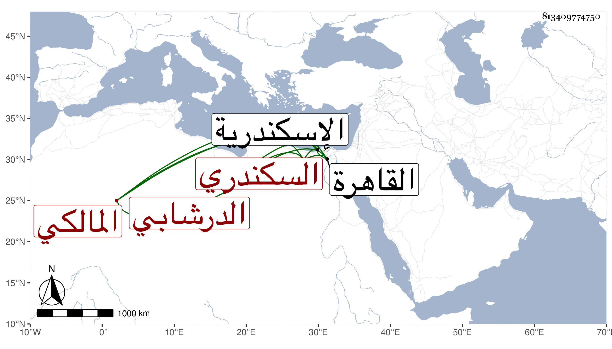

0902Sakhawi.DawLamic.ITO20230111-ara1.EIS1600.813409774750
Biography ID: 813409774750
409
أحمد بن محمد بن علي بن أحمد بن ناصر الشهاب الدرشابي الأصل نسبة لبلدة بالبحيرة السكندري المالكي . ولد بها سنة أربعين وثمانمائة تقريبا ونشأ فحفظ القرآن والمختصر والرسالة والثلث من ابن الحاحب والجرومية وألفية النحو وعرض على جماعة وقرأ في الفقه على أبي القسم النويري والزين طاهر والولوي السنباطي والأبدي والنور الوراق وأبي الفضل المغربي وأحمد بن يونس وآخرين وبعضهم أكثر من بعض وفي العربية على ابن يونس والأبدي وكذا عن الشمني وفي الفرائض عن أبي الجود والشمس بن جنيبات وسمع على شيخنا والأمين الأقصرائي والزكي المناوي بل قرأ على السيد النسابة في البخاري وعلى ابن يفتح الله الموطأ وغيره كما أملي على ذلك كله مما لم أعرف شيئا منه وكذا سمع مني المسلسل بشرطه وقرأ علي يسيرا من أول البخاري وأجزت له . وناب في القضاء بالاسكندرية عن ابن البدر بن المخلطة ثم استقل بقضائها في شوال سنة أربع وثمانين عوضا عن العفيف فدام به إلى إحدى الجمادين من التي تليها وصرف به ثم عاد في جمادى الآخرة سنة تسع وثمانين واستمر ، وقدم القاهرة غير مرة وحج في سنة تسع وستين وجاور ورأيت جماعة من المكيين يحمدون تصرفه حين قدومهم عليه فيما لهم من الأوقاف تحت نظره .
